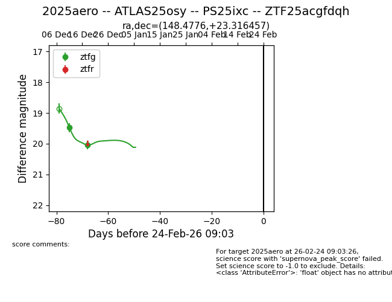
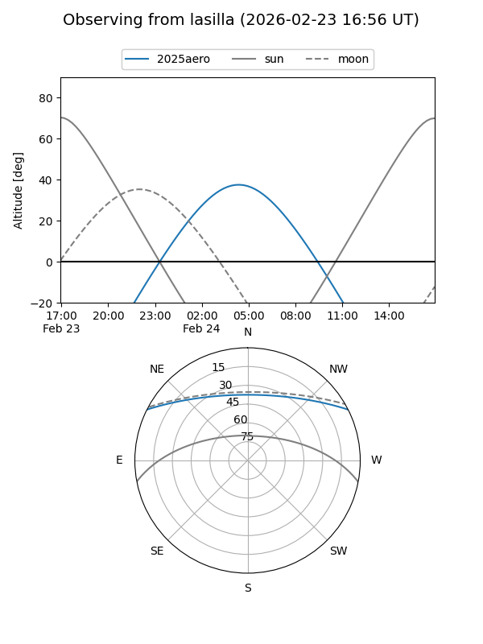
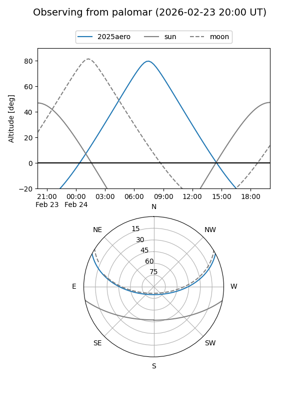
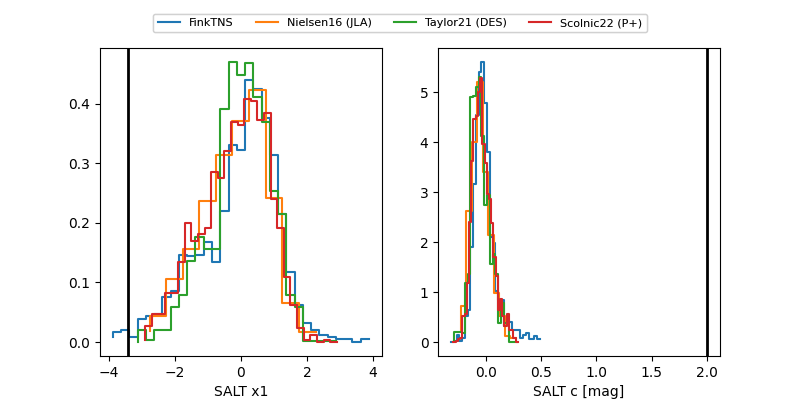

2025aero
Target 2025aero at 2025-12-29 18:19
Aliases and brokers:
FINK: fink-portal.org/ZTF25acgfdqh
Lasair: lasair-ztf.lsst.ac.uk/objects/ZTF25acgfdqh
ALeRCE: alerce.online/object/ZTF25acgfdqh
TNS: wis-tns.org/object/2025aero
YSE: ziggy.ucolick.org/yse/transient_detail/2025aero
alt names
ZTF25acgfdqh (ztf,fink_ztf)
2025aero (tns,yse)
ATLAS25osy (atlas)
PS25ixc (panstarrs)
Coordinates:
equatorial (ra, dec) = 148.4776,+23.31646
equatorial (HMS+DMS) = 09:53:54.61,+23:18:59.24
galactic (l, b) = (208.2157,+49.87189)
Flags:
Photometry:
last ztfg=20.04
2 ztfg detections
Lightcurve

Visibility


Additional plots
